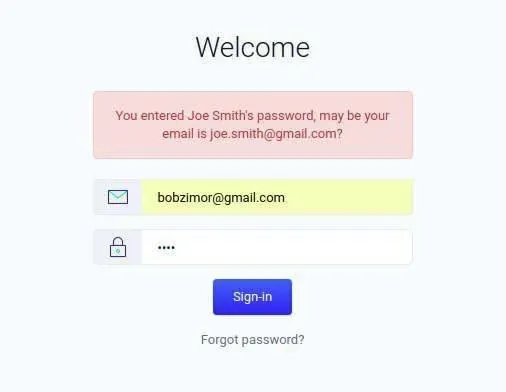
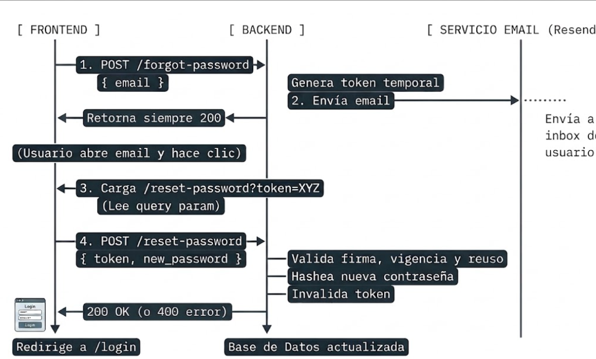

Clase 38:
Flujos de Sesión en Frontend, Password Reset y OAuth2
🎯 Estructura y Prácticas de esta Clase:
- 🦾 Práctica 1: Almacenamiento de Sesiones en Frontend
- 🦾 Práctica 2: Ciclo de Vida de Sesión en Cliente
- 💻 Proyecto Final: Connecting the Lock: Authentication Flows & Password Reset
🌐 Dominio vs Origen: Definición Técnica y Ejemplo
https://tienda.ejemplo.com:443/productos
tienda.ejemplo.com (o raíz ejemplo.com)
https://tienda.ejemplo.com:443
Es la dirección legible por humanos que identifica una red o servidor en internet (parte del sistema DNS).
Se define strictly por la tupla triple de 3 elementos obligatorios:
<protocolo>://<host>:<puerto>
🏡 Analogía Cotidiana: La Casa de Juegos
Imagina una casa de juegos:
Es como decir la "Casa del Árbol". Solo te dice qué lugar es, para que todos sepan de qué casa estás hablando.
Para que cuente como la misma casa exacta, necesitas tres cosas obligatorias:
- 🚴 Cómo vas: ¿Llegas en bicicleta o en patineta? (El protocolo:
httpohttps). - 📍 El nombre del lugar: La Casa del Árbol (El dominio).
- 🔑 Por cuál puerta entras: ¿Por la puerta principal o por la trampilla del techo? (El puerto:
:443,:80).
Si cambias de bicicleta a patineta (http vs https), o intentas entrar por otra puerta (puerto diferente), el guardia de seguridad del navegador dice: "¡Un momento, este ya es otro origen diferente!" y no te deja tocar los juguetes del cuarto.
💾 Mecanismos de Almacenamiento en el Cliente (Frontend)
Estos cuatro mecanismos sirven para guardar información en el desarrollo web frontend, pero varían drásticamente en persistencia, capacidad y comunicación con el servidor.
| Característica | Variables (JS) | Session Storage | Local Storage | Cookies |
|---|---|---|---|---|
| Persistencia | Se pierden al recargar la página (F5). |
Persiste recargas; se borra al cerrar la pestaña. | Persiste indefinidamente hasta que se borre manualmente. | Depende de la fecha de expiración configurada (o de sesión). |
| Alcance | Contexto de ejecución actual / memoria RAM. | Exclusivo de la pestaña actual (mismo origen). | Compartido entre todas las pestañas de un mismo origen. | Compartido entre todas las pestañas de un mismo dominio. |
| Capacidad | Limitada por la RAM disponible. | ~5 MB por origen. | ~5 MB a 10 MB por origen. | ~4 KB por cookie. |
| Envío al servidor | No (solo cliente). | No (solo cliente). | No (solo cliente). | Sí, viajan automáticamente en cada petición HTTP vía headers. |
| Acceso API | Lenguaje directo (let, const). |
sessionStorage.setItem() |
localStorage.setItem() |
document.cookie o cabeceras HTTP (Set-Cookie). |
Almacenan datos efímeros en RAM mientras corre el script.
Uso típico: Estados de componentes en React/Vue, contadores.
Pares clave-valor aislados por pestaña.
Uso típico: Formularios multipaso, filtros temporales.
Persistente en disco sin caducidad automática.
Uso típico: Tema oscuro/claro, preferencias UI, carrito offline.
Mantienen estado cliente-backend. Banderas HttpOnly/Secure.
Uso típico: Tokens de autenticación, sesiones, privacidad.
🧸 Analogía Cotidiana: Entendiendo el Almacenamiento Frontend
Imagina que estás jugando en tu habitación con tus juguetes favoritos:
- Es lo que sostienes en las manos en este momento exacto.
- Si te distraes o parpadeas rápido (recargar la página
F5), sueltas el juguete y ya no lo tienes en las manos.
- Es una cajita donde guardas los juguetes con los que estás jugando hoy mientras la puerta del cuarto está abierta.
- Si sales y cierras la puerta (cerrar la pestaña del navegador), la cajita se limpia mágicamente y queda vacía para la próxima vez.
- Es un baúl grande y pesado en tu habitación.
- Todo lo que guardas ahí se queda para siempre, aunque te vayas a dormir, apagues la luz y regreses días después, hasta que tú mismo decidas tirarlo.
- Es una nota pequeña pegada en tu mochila.
- Cada vez que vas a la cocina a pedirle una merienda a tus papás (el servidor), ellos leen la notita para saber exactamente quién eres y qué merienda te toca recibir.
💻 ¡Ahora a la Parte Práctica!
Demuestra lo aprendido aplicando los conceptos de esta clase en el proyecto práctico. Abre tu entorno de desarrollo y resolvamos los ejercicios interactivos.
Connecting the Lock: Authentication Flows in the Frontend
🛡️ ¿Qué es un Guard? (Client-Side vs. Server-Side Guard)
Es un mecanismo de control que intercepta la navegación hacia una ruta para validar credenciales o permisos antes de permitir el acceso al contenido.
- 📍 Dónde: Servidor (antes de enviar el HTML).
- 🔑 Dato clave: Usa Cookies (viajan solas en el header HTTP).
- 🚀 Ventaja: Bloquea en la puerta (redirección instantánea 302, cero parpadeo, código 100% protegido).
- 📍 Dónde: Navegador (tras descargar y montar el bundle JS).
- 🔑 Dato clave: Usa localStorage (el servidor es ciego a él).
- ⏳ Reto: Redirección tardía en React; requiere spinners para evitar parpadeos visuales (FOUC).
Si guardas el token en localStorage, tu protección debe ser Client-Side; si usas Cookies HttpOnly, puedes proteger directamente en el middleware.ts.
🏰 Analogía Cotidiana: El Club Secreto de Juegos
Para entrar necesitas una ficha dorada (tu pase de entrada). El problema es dónde guardas esa ficha y quién te revisa.
localStoragees como el bolsillo de tu pantalón en tu casa (el navegador).- El guardia de la entrada del castillo (
middleware.ts) está lejos. Al tocar la puerta, no puede meter la mano en tu bolsillo. ¡Solo ve lo que mandas en la lonchera (las Cookies)!
- Si usaras Cookies, el guardia de la puerta mira la lonchera antes de dejarte dar un paso. Si no hay ficha, te frena en seco.
- Pero si tu ficha está en el bolsillo (
localStorage), este guardia no puede hacer su trabajo.
- Al cruzar la puerta de la sala de juegos, hay un guardia robot adentro (
AuthGuard/useAuth). - Al entrar, te dice: "¡Alto! Muéstrame el bolsillo".
- Si tienes la ficha en
localStorage, juegas; si no, te saca a la calle (pantalla de login).
🧠 useAuth (El Cerebro / La Lógica de Autenticación)
useAuth?
Un Custom Hook de React que centraliza el estado y todas las operaciones relativas a la sesión del usuario.
- 📂 Lee y valida el token en el cliente (
localStorage). - 🌐 Expone el estado global:
user,isAuthenticated,isLoading. - 🔐 Provee métodos de autenticación:
login(),logout().
Sabe quién es el usuario y si tiene permiso, pero no decide qué renderizar en pantalla.
🛡️ AuthGuard (El Escudo / La Barrera Visual)
AuthGuard?
Un componente contenedor (Wrapper) que envuelve páginas o layouts protegidos para restringir el acceso no autorizado.
- 🧠 Consume
useAuthpara evaluar la sesión actual. - ⏳ Muestra un estado de carga (Spinner) mientras se valida el token (evita parpadeos / FOUC).
- 🚪 Redirige a
/loginsi no hay sesión válida; renderizachildrensi está autorizado.
Actúa como el filtro visual: decide si el usuario puede ver la interfaz o es expulsado de la ruta.
🎮 Analogía Cotidiana: La Zona Secreta de Videojuegos
- Es tu amigo que tiene una lista en la cabeza y sabe todo sobre ti.
- Si le preguntan, él dice al instante:
- • "Sí, él tiene su ficha en el bolsillo", o
- • "No, viene con las manos vacías", o
- • "Espera un segundo, todavía estoy buscando en su mochila".
- Rol clave: Él solo sabe la verdad, pero no te empuja ni te abre puertas.
Es un guardia parado justo enfrente de la entrada. No te revisa los bolsillos él mismo; se voltea y le pregunta a tu amigo sabelotodo (useAuth): "Oye, ¿este niño tiene su ficha dorada?":
- ⏳ "Aún estoy buscando": El guardia te dice "Espera aquí un segundo con un relojito de arena" (pantalla de carga).
- 🚪 "No tiene ficha": El guardia te da la vuelta y te manda derechito a la fila de afuera (pantalla de login).
- ✅ "¡Sí la tiene!": El guardia se hace a un lado y te deja pasar a jugar con todos los juguetes.
🎯 Conceptos Clave que Deben Dominar
El frontend no "sabe" quién es el usuario hasta que el backend le entrega una cadena opaca (JWT). El frontend no valida la firma criptográfica; solo se encarga de tres cosas: guardarlo, enviarlo en cada petición y destruirlo al salir.
El estándar de transporte en las peticiones HTTP:
Authorization: Bearer <token>
- Login / Register: Guardar en
localStorage. - Requests: Leer de
localStoragey adjuntar header. - Error 401: Token vencido o alterado ➔ Borrar
localStoragey redirigir a/login. - Logout: Borrar
localStoragey redirigir a/login.
El localStorage solo existe en el navegador. Por eso, el middleware.ts no puede leerlo directamente (a menos que usen Cookies). En este proyecto la protección debe ser Client-Side (un hook useAuth o un AuthGuard envolviendo los layouts protegidos).
📐 Arquitectura Técnica del Proyecto
Diseña la pizarra o el diagrama mental dividiéndolo en 4 piezas modulares:
▼
/login└─ SÍ ──> Renderiza vista
▼
"Authorization: Bearer " + token└─ Intercepta: si
status === 401 ──> removeItem('token') + router.push('/login')
▼
(GET /auth/me, PUT /profiles/me, etc.)
💻 ¡Ahora a la Parte Práctica!
Demuestra lo aprendido aplicando los conceptos de esta clase en el proyecto práctico. Abre tu entorno de desarrollo y resolvamos los ejercicios interactivos.
The Missing Piece: Password Reset Flow
🛡️ Prevención de Enumeración de Usuarios
Técnica de seguridad que evita que un atacante descubra qué correos o usuarios existen en la base de datos mediante pruebas masivas.
Dar respuestas distintas según el fallo: "Usuario no registrado" vs. "Contraseña incorrecta". Esto le confirma al atacante qué cuentas son reales.
Responder siempre "Credenciales incorrectas" o "Si el correo existe, te enviaremos instrucciones".
Evitar fugas por demoras del servidor (timing attacks al hashear passwords).
Bloquear intentos reiterados desde una misma IP.
🚨 Ejemplo Real: El Peor Escenario de Enumeración

El sistema no solo revela que la contraseña ingresada pertenece a otra cuenta ("Joe Smith"), sino que le entrega al atacante el correo electrónico exacto de la víctima: joe.smith@gmail.com.
NUNCA des pistas ni devuelvas información privada de otros usuarios en los mensajes de validación. Usa siempre respuestas genéricas como "Credenciales incorrectas".
🔑 Tokens de Sesión vs. Tokens de Recuperación
- Objetivo: Mantener al usuario autenticado para navegar y consumir la API.
- Vida útil: Media / Larga (horas o días; renovable).
- Uso: Reutilizable en cada petición HTTP.
- Entrega: Respuesta directa del Login (Cookies
HttpOnlyo JSON).
- Objetivo: Permitir cambiar una contraseña olvidada sin haber iniciado sesión.
- Vida útil: Muy corta (10 a 15 minutos).
- Uso: Un solo uso (single-use); se invalida inmediatamente tras el cambio.
- Entrega: Enlace único enviado por canal externo (correo electrónico o SMS).
💡 En resumen: El de sesión es tu pase temporal para moverte por toda la app; el de recuperación es una llave de emergencia que se destruye tras abrir una sola puerta.
⚠️ El Problema del Token Reutilizado (Single-Use)
Es stateless: matemáticamente sigue siendo válido hasta que expire su fecha límite (exp). El servidor no puede "revocarlo" por sí solo tras el primer uso.
Si un enlace de recuperación sigue activo tras cambiar la clave, un atacante podría reutilizarlo antes de que expire.
Guardar el token (o su hash) en la base de datos con un flag used: true que se activa inmediatamente al consumirlo.
Guardar password_changed_at en el usuario y rechazar cualquier token cuya emisión (iat) sea anterior a esa fecha.
📧 Servicio de Email Transaccional
Correos automatizados e inmediatos disparados por eventos críticos del usuario (ej. restablecimiento de contraseña, bienvenida, 2FA).
Alta probabilidad de caer en Spam, baja reputación de IP y alta complejidad de mantenimiento de registros de dominio (SPF, DKIM, DMARC).
El backend realiza peticiones HTTP seguras hacia el proveedor de mensajería, quien gestiona colas de envío, entregabilidad garantizada y analítica.
Debe residir estrictamente en variables de entorno (.env) y NUNCA exponerse en el repositorio de Git ni en el código cliente (Frontend).
🎯 Conceptos Clave que Deben Dominar
POST /auth/forgot-password y la vista devuelven siempre 200 OK y el mensaje genérico: "Si el correo existe, recibirás un enlace". Nunca responder "Usuario no encontrado".
El de sesión dura días/semanas para navegar. El de reset es de corta duración (15-60 min), propósito único (type: "reset") y de un solo uso (single-use).
El JWT stateless no se revoca solo. El backend requiere estado: guardar el token en DB con used: true o verificar password_changed_at vs fecha de emisión (iat).
El backend delega el envío a una API externa (Resend o SendGrid) en lugar de SMTP propio. La API Key reside estrictamente en .env (nunca en Git ni Frontend).
📐 Arquitectura Técnica del Proyecto
Diagrama de Secuencia: Flujo completo entre Frontend, Backend y Servicio de Email:

💻 ¡Ahora a la Parte Práctica!
Demuestra lo aprendido aplicando los conceptos de esta clase en el proyecto práctico. Abre tu entorno de desarrollo y resolvamos los ejercicios interactivos.